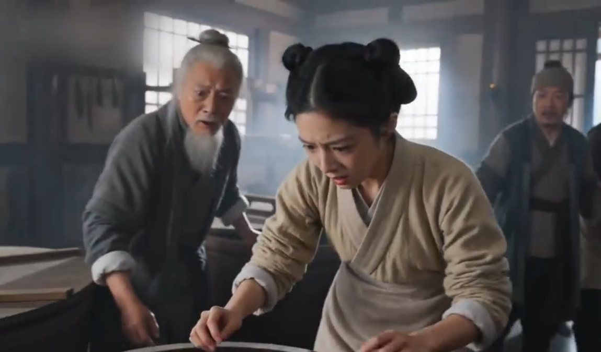
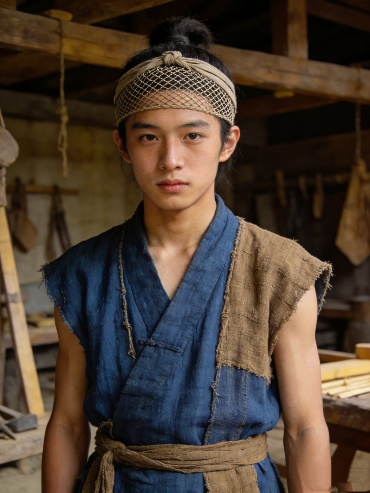
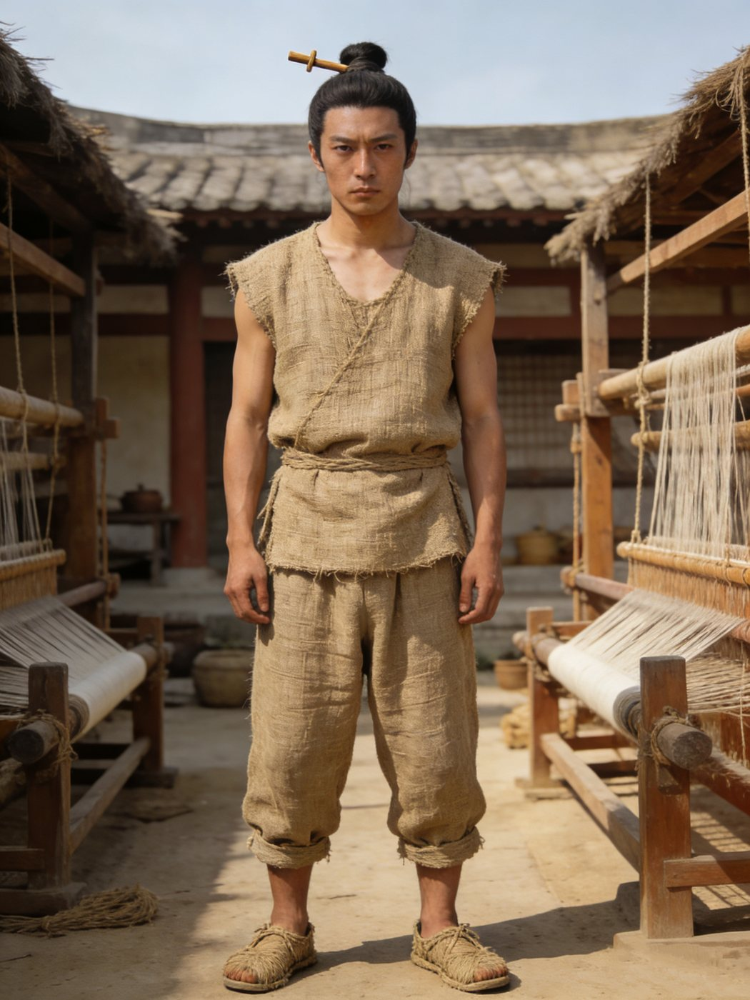
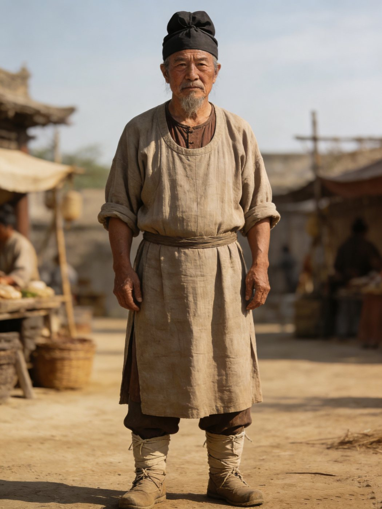

新闻与传播专业硕士在读，本科读的是网络与新媒体。从校媒编辑部到地方融媒体中心，再到市委网信办，我一直在内容生产的第一线：审稿、改标题、排推文，也做舆情监测、案例梳理与报告撰写。
文字之外，我保持着摄影与视频的创作习惯——人像、静物、风光、食物都拍，也剪影视混剪。这让我能独立完成一条内容从脚本、拍摄到剪辑、封面的全部视觉输出，而不只是停留在文字环节。
「把政策要求翻译成清晰、可执行的实务指引」，是我在政务内容里最想做好的一件事。
44 张照片，分为人像、静物、风光建筑、食物四个方向。风景与人像多来自旅行途中的现场观察，静物与食物则是摄影课上对光线、构图与质感的集中练习。
完整图库按四个分类整理，支持全屏查看。
查看全部 44 张→从 AI 微电影、公益宣传片到影视混剪。既有需要统筹进度的团队项目，也有一个人完成的剪辑练习。




另有完整的视频作品列表，含播放与作品说明。
全部视频作品→校媒 → 地方融媒体中心 → 市委网信办，一条围绕「内容生产」与「舆情实务」的实践线索。